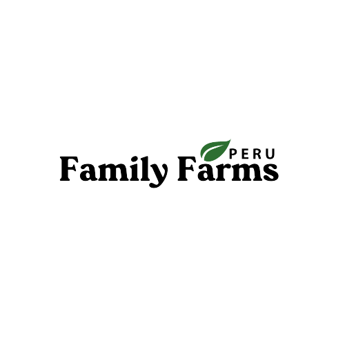

Descriptive analysis of the varietal replacement decision and the preferred implementation model for Stage 2.
104 hectares | Family Farms Peru
Stage 2 is currently planted with Sunrise. The analysis must separate two decisions: whether Sunrise should be replaced by Gold, and how Gold should be implemented.
The replacement of Sunrise with Gold is strongly supported by the analysis. Gold improves quality, efficiency, contribution and strategic relevance.
The main discussion is whether Gold should be implemented through higher density in soil, using the current operating system, or through a container-based model.
The decision should not be evaluated only as a financial exercise. It must be consistent with the strategic focus of Family Farms Peru: efficiency, quality and relevance.
The change from Sunrise to Gold is not the main debate. Gold is superior from a quality, efficiency, contribution and strategic relevance perspective.
No replacement scenario
Full replacement scenario
+USD 6.56M NPV
| Scenario | 2026 | 2027 | 2028 | 2029 | 2030 | Total |
|---|---|---|---|---|---|---|
| Sunrise Sales | 13.23 | 13.23 | 13.09 | 11.78 | 11.78 | 63.11 |
| Sunrise Contribution | 4.98 | 4.98 | 4.85 | 4.07 | 4.07 | 22.94 |
| Gold Sales | 12.41* | 3.59 | 15.78 | 17.80 | 19.22 | 68.80 |
| Gold Contribution | 4.83* | 0.46 | 8.67 | 10.12 | 11.17 | 35.27 |
| Incremental Contribution | -0.14 | -4.51 | +3.83 | +6.06 | +7.11 | +12.33 |
| Incremental Contribution % | -3% | -91% | +79% | +149% | +175% | +54% |
*2026 remains essentially a Sunrise production year. The reduction reflects the replacement executed in November 2026. Figures in USD millions.
The 104 ha block should not be evaluated in isolation. The relevant view is the impact on the full Stage 2 contribution.
| Year | 2026 | 2027 | 2028 | 2029 | 2030 |
|---|---|---|---|---|---|
| Impact on Total Stage 2 Contribution | -1.3% | -8.1% | +3.9% | +6.3% | +7.0% |
Once Gold is selected, the main discussion is implementation. The alternatives are higher density in soil or higher density in containers.
| Strategy | Density | Yield Curve | CAPEX / ha | Total CAPEX 104 ha | Operational View |
|---|---|---|---|---|---|
| Base Gold Scenario | 4,915 plants/ha | Longer | ~USD 23,000 | ~USD 2.39M | Current design adapted to Gold |
| Higher Density in Soil | 6,265 plants/ha | Shorter / lower kg gap | ~USD 27,600 | ~USD 2.87M | Preferred |
| Higher Density in Containers | 6,265 plants/ha | Shorter, but with higher transition disruption | ~USD 105,000 | ~USD 10.92M | High CAPEX |
| Incremental Capital: Containers vs Soil | — | — | +USD 77,400/ha | +USD 8.05M | 3.8x CAPEX |
The container alternative is not simply a different planting system. It is a substantially different field redevelopment project.
| Factor | Higher Density in Soil | Higher Density in Containers |
|---|---|---|
| CAPEX / ha | ~USD 27,600 | ~USD 105,000 |
| Total CAPEX 104 ha | ~USD 2.87M | ~USD 10.92M |
| Incremental capital required | Base | +USD 8.05M |
| Existing infrastructure | Preserved | Significant modifications required |
| Operating model | Known and validated | New model |
| Standardization | Maintains current system | Introduces a different production model |
| Production disruption | Lower | Higher potential gap |
| Execution risk | Lower | Higher |
| Technical validation | High | Partial |
| Incremental benefit | Known value capture through Gold | Uncertain incremental benefit |
Delivers the strategic, quality and contribution benefits of the varietal change.
Maintains existing systems and avoids a broader field redevelopment project.
Requires approximately USD 8.05M less CAPEX than containers across 104 ha.
It improves quality, efficiency, contribution and relevance. The decision is consistent with the strategic priorities of Family Farms Peru.
It captures the majority of expected benefits with lower CAPEX, lower complexity, faster execution and a validated operating model.